Maleta
El objeto escencial para cualquier estudiante
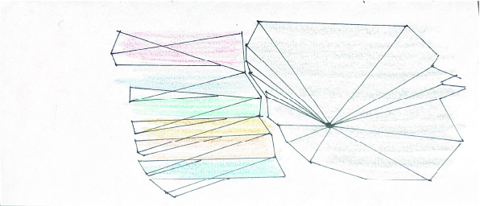
El bien y el mal, la calma y el caos; juntos conviven en una misma experiencia. Navegar tu propio mundo de manera empírica por medio de los sentidos, es fundamental para comprender el origen de cada experiencia percibida, definiendo así su dualidad. Bienvenidos a "Dualidad Sensorial", un repositorio de audios, imágenes y videos que transforman la experiencia cotidiana en una exploración sensorial.
El objeto escencial para cualquier estudiante

La conexión entre la concentración, atención y mente
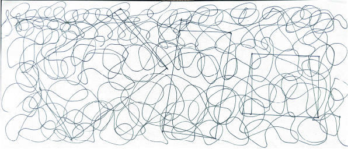
Cuando algo sale mal, no es una mala idea volver a empezar.
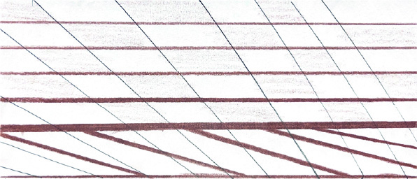
En está ciudad caótica, la puntualidad no existe.
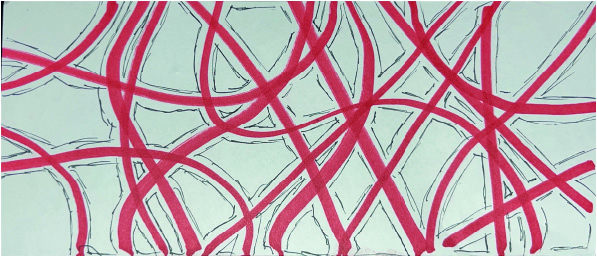
Entre tantas personas conviviendo contigo, no existe claridad para entender que quieren decir.
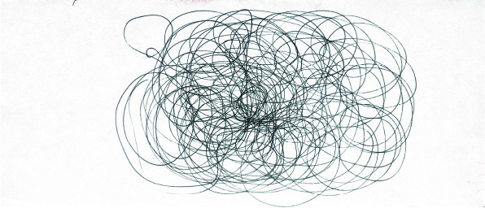
El mejor amigo del hombre, utilizando el mismo método de defensa
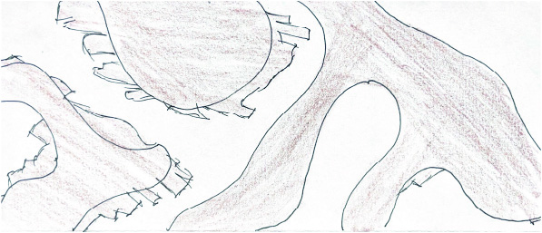
La concentración de estrés entre las articulaciones.
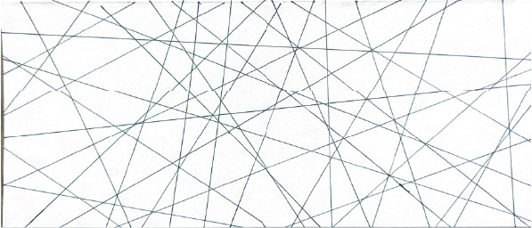
Golpes a 100bpm, nuestro motor.
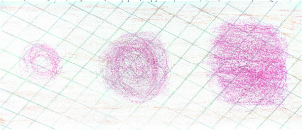
inhalar, sostener, exhalar; un ciclo constante
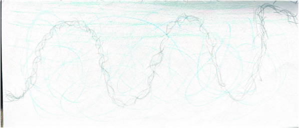
Entre tantos cables enredados, siempre será increíble la luz de encendido
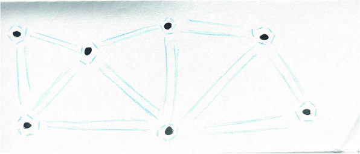
La conexión entre la concentración, atención y mente; ahora digitalmente
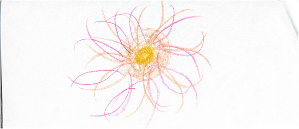
Mil contextos, mismo sonido, mismo proceder.
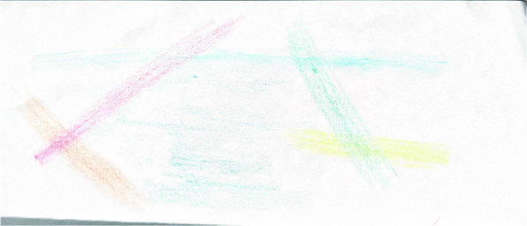
figcaption>dibujado por: AndrésEl poder del mundo, en la palma de tu mano.
Un viaje, un mundo por explorar.
La ilusión, ver el mundo como tú quieres verlo.
405 grados de paisaje.
| Nombre | Categoría | Lugar | Fecha | Duración |
|---|---|---|---|---|
| Maleta | Universidad | Salón | 2026 | 25s |
| Escribir | Universidad | Salón | 2026 | 24s |
| Hojas | Universidad | Salón | 2026 | 21s |
| Tráfico | Ciudad | Calle | 2026 | 52s |
| Susurro | Ciudad | Casa | 2026 | 18s |
| Perros | Ciudad | Parque | 2026 | 18s |
| Manos | Cuerpo | Cuarto | 2026 | 13s |
| Latidos | Cuerpo | Cuarto | 2026 | 19s |
| Respiración | Cuerpo | Cuarto | 2026 | 18s |
| Conexión | Tecnología | Casa | 2026 | 23s |
| Teclado | Tecnología | Cuarto | 2026 | 20s |
| Notificación | Tecnología | Casa | 2026 | 15s |
| Nombre | Lugar | Fecha | Duración |
|---|---|---|---|
| Gesto | Casa | 2026 | 36s |
| Recorrido | La guajira | 2026 | 25s |
| Objeto | Casa | 2026 | 23s |
| Escena | Universidad | 2026 | 35s |